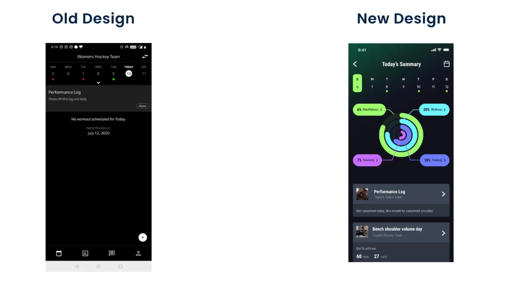
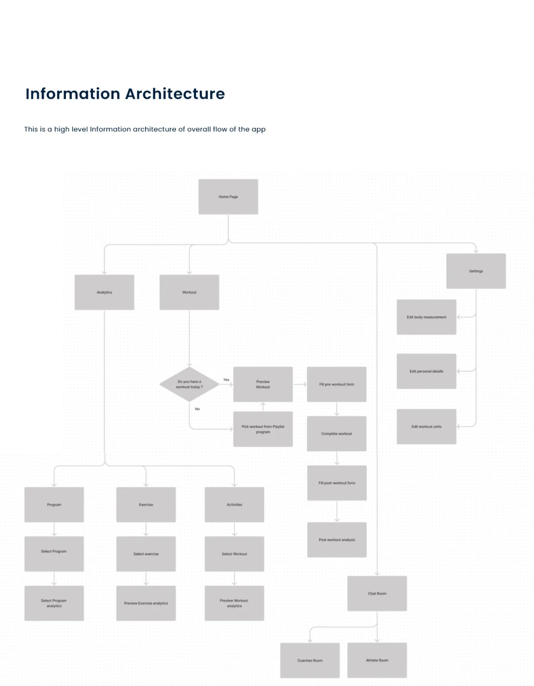
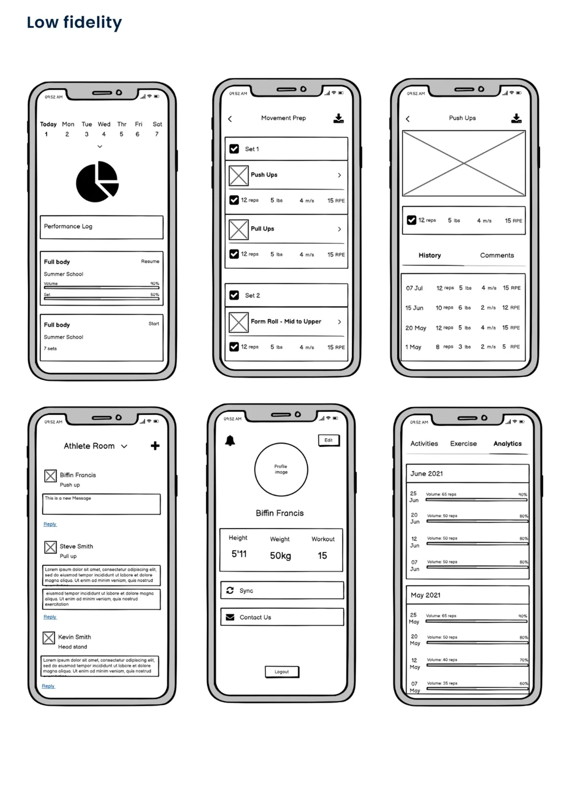
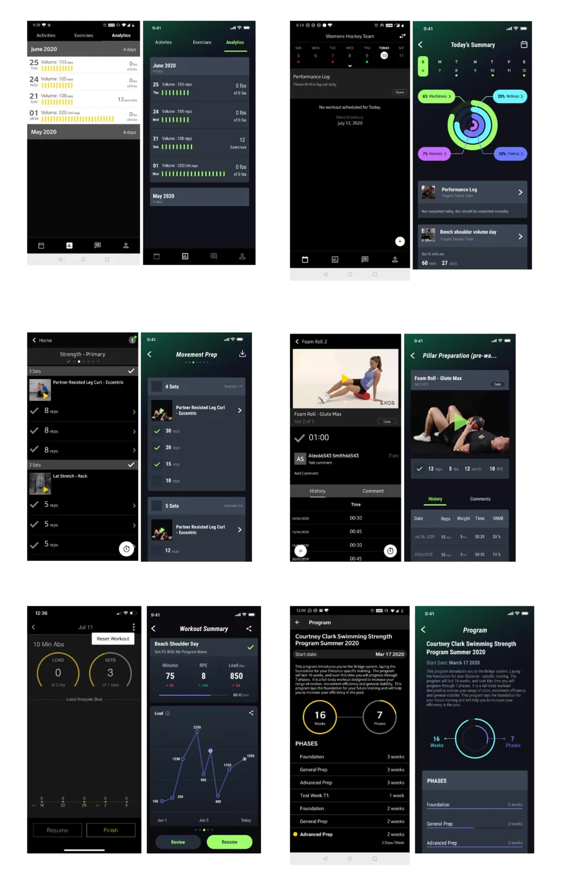

BridgeAthletic — Mobile App Redesign
UI/UX · User Research · 2020–2021
BridgeAthletic's training app hadn't had a major mobile update in seven years. Then COVID-19 pushed training out of the gym and onto phones overnight. I led the research and redesign of the mobile app — a world-class experience that had to work for two very different people at once: the elite coach programming workouts, and the first-timer following them.
Project overview
The existing mobile app was designed seven years earlier and had never had a major UI refresh. When COVID-19 shut the gyms, remote workouts spiked — and the dated app suddenly became the primary way athletes trained. It couldn't carry that weight.
The brief was twofold: deliver a visually world-class experience, and reduce complexity by user type — the same app is used by professional athletes and by people brand new to fitness, and one size was fitting neither.

I ran an open-ended survey plus interviews, and folded in the Customer Success team's prior research. The scores were blunt about where we stood:
The takeaway: users were clear the UI looked outdated and had to change. They were neutral on the underlying UX — and willing to accept change for a more seamless experience. That gave me room to rethink the visuals boldly while keeping flows familiar.
I benchmarked two categories: mainstream fitness apps people already loved (Apple Fitness, Fitbit, Strava, Trainerize), and our direct strength-and-conditioning competitor (TrainHeroic).
- Commercial apps win on outcomes — they lean on analytics to show progress.
- The best experiences reduce manual input, pulling automated data from smart watches.
- But commercial apps lack the in-depth analysis a serious S&C app provides.
That reframed the work: our features were already superior — it was the dated interface of our direct competition we had to beat. Match the polish of consumer apps, keep the depth coaches rely on.
I split the user base into two groups — and six sub-personas — because their goals, contexts, and even their hands were different. Each insight became a design rule.
The Coach
Builds training and keeps an eye on every athlete under their profile. Military coach · S&C coach · Personal trainer
- Online programming is still a new concept — most run on Excel & paper.
- Field & military settings often lack internet.
- They train multiple players in a single sitting.
- Often well-built, with big hands.
- The familiarity of Excel — fast data entry, smooth onboarding.
- Offline mode with easy upload/download of results.
- Viewing & analysing multiple athletes at once.
- Generous touch targets for every clickable control.
The Athlete
Follows the workout their coach assigns, then logs the result. Military trainee · Professional athlete · Fitness enthusiast
- Already fluent in mainstream commercial fitness apps.
- Gyms & military settings often lack connectivity.
- Need motivation to keep showing up.
- Want to reach their coach to resolve questions fast.
- A consumer-app feel to cut the learning curve.
- Offline logging with easy sync.
- Peer comparisons & their own history for motivation.
- A quick line to coaches, mid-workout.
I grounded the redesign in three real scenarios — an individual with a personal trainer, an athlete training off-season, and an athlete in-season with a coach — then drew a high-level information architecture for the whole app.

I worked low to high — pinning down structure and flow in greyscale before layering on the new visual language.


A redesign lives or dies on its system, so I built one — a dark base with high-energy neon accents, confident on a phone in a gym and legible mid-set. Three principles held it together:
A near-black canvas cuts glare in the gym and lets data and neon do the talking.
One vivid hue per metric — colour is signal, never decoration.
Rings, pills and oversized numerals read in a single mid-set glance.
Colour — base & surfaces
Colour — signal palette
Type scale — Roboto Condensed
Components, on their home turf
I tested at two levels. One-to-one moderated remote sessions with five users of differing attitudes toward training — walking each through scenarios while they thought aloud, then a short questionnaire. One-to-many with the in-house team, running the same scenario script so anyone could flag a bug or gap against the project tracker. The post-launch survey is below.
The impact
Post-launch survey